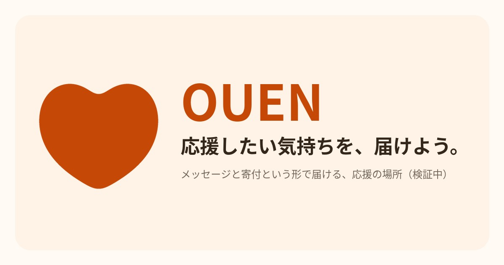

OUEN
OUEN
開発日誌｜2026年11月20日
お金が動くのは、いちばん最後。OUENが順番を決めた3つの理由
OUENは検証中のサービスです。この日誌では、作っている過程そのものを公開しています。
いまのOUENで、寄付はまだできません。「寄付できますか？」と聞かれることがありますが、答えは「まだ」です。この日誌では、その順番にした理由を3つ書きます。
今の数字
サイト訪問は累計52回で、大半は運営側の確認です。外部の方の体験開始・体験完了、応援行動、シェアは、いずれも0件のままです。
- サイト訪問：累計52回（大半は運営側の確認）
- 体験開始：0件（外部の方）
- 体験完了：0件
- 応援行動：0件
- シェア：0件
理由1：本人が「受け取る」と言っていないお金は、集めない
応援ページは、応援したい人が先に作れます。でも本人が名乗り出て、受け取りの準備が整うまでは、そのページでお金は動きません。届くのは、メッセージと応援の気持ちだけです。本人の知らないところでお金が集まる仕組みにはしません。
理由2：お金を預からない
もしOUENがお金をいったん預かる形にすると、法律の登録が要る事業になります。それ以前に、預かる形は「お金が今どこにあるのか分からない」という不安とトラブルの元です。将来お金が動く段階でも、支払いは本人の口座に直接入る形にして、OUENはお金を触らない設計にしています。
理由3：先に確かめたいのは「気持ちが届くか」
今の検証の中心は、ここです。お金を先に動かしてしまうと、測りたいものがぶれてしまいます。お金を最後にすることで、応援の気持ちそのものが、相手に気持ち悪がられずに届くかどうかを確かめています。
この順番は変えません
本人が名乗り出たページから、お金が動く段階の準備を始めます。それまでは、メッセージと応援の気持ちだけが届く場所として、数字の公開を続けます。
いまの画面を見てみる